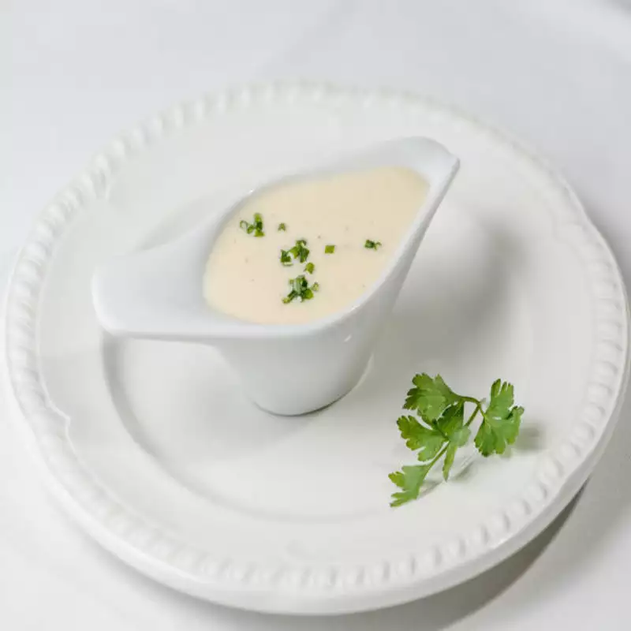

White Sauce
Description
It's white sauce. Enjoy it on pasta, on toast, or just chug down a tasy glass before bed! Yum!

Ingredients
- 500ml whole milk
- Half an onion
- 1 leaf (bay)
- 2 cloves
- 50g butter
- 50g plain flour
Technique
- Boil up that milk! Do it with the onion, leaf and cloves.
Then leave it around for 20 minutes to get infused.
- Melt the butter in another saucepan, then add the flour. Stir it up,
get a roux going, that's right. Cook it for like 2 minutes, just like that.
- Take out the onion, leaf and cloves (yuk!). Add the milk to the roux in little bits,
stirring it all up as ye go. Cook and stir for 5-10 minutes, until it thickens up. And it's done.